Soporte probatorio digital
Cada papel de trabajo, una prueba inalterable.
Documentación, trazabilidad y seguridad para los papeles de trabajo del contador público, el auditor y el revisor fiscal: no un gestor documental, un expediente legal.
- La ideaSaber quién preparó cada papel, quién lo aprobó y demostrar que no fue alterado.
- Para quiénProfesionales que deben documentar su juicio y conservar evidencia por mandato normativo.
- Qué no esUn repositorio de archivos: INTEGRA organiza y protege la evidencia de auditoría.
Prototipo académico. Las capturas vienen de la aplicación funcionando con tres auditorías simuladas; clientes y personas son ficticios, y los teléfonos y documentos de identidad aparecen difuminados.

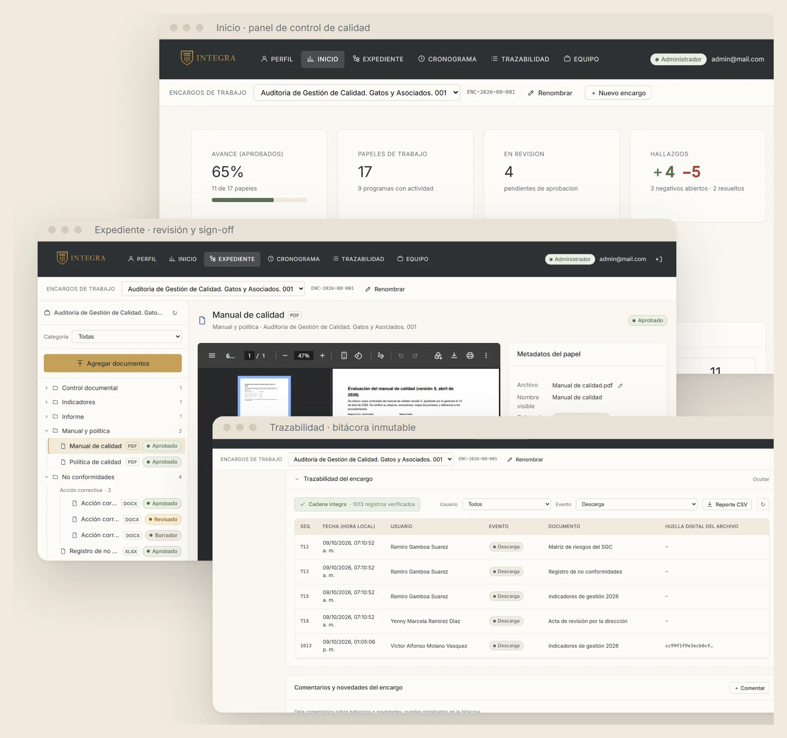
01 · Qué es INTEGRA
No un gestor documental, un expediente legal
Aplicativo en la nube para documentar, trazar y proteger los papeles de trabajo del contador público, el auditor y el revisor fiscal.
Gestor documental
Drive, SharePoint, carpetas compartidas
- Carpetas sueltas, sin la estructura de la auditoría.
- Versiones sin firma de quién revisó o aprobó.
- Nadie sabe quién consultó o descargó un papel.
- Un archivo puede cambiarse o borrarse sin dejar evidencia.
INTEGRA
Infraestructura de cumplimiento normativo
- Expediente por encargo: ciclo, programa y papel.
- Revisión y aprobación con firmante y hora.
- Cada consulta y descarga queda en la bitácora.
- Cualquier alteración se detecta: la cadena se rompe.
Cuatro pilares
- Bitácora inmutableCada acción sellada con cadena SHA-256.
- Sign-off por rolesAprobación jerárquica y separación de funciones.
- Trazabilidad totalConsultas, descargas y cambios con huella.
- Conservación legalCierre de ensamblaje y retención.
Cómo está construido
Aplicación web en React y TypeScript; una capa de dominio propia en Java que aplica roles, bitácora, sign-off y cierre; FormKiQ Core (motor documental de código abierto) para almacenamiento y versiones; y Keycloak para identidad y acceso. INTEGRA no modifica FormKiQ: lo envuelve con la lógica normativa.
- 3auditorías simuladas
- 51papeles de trabajo
- 4roles con permisos distintos
- +1 000registros en una cadena verificada
Alineado conNIA 230ISO/IEC 27001:2022

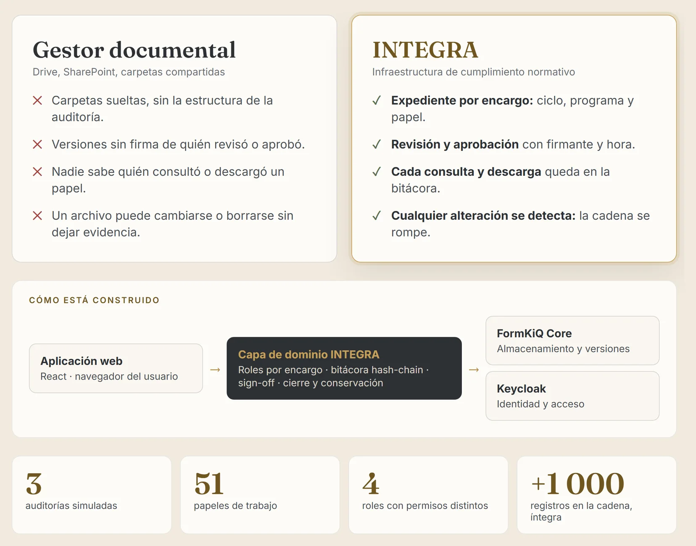
Módulo 02 · Acceso y roles
Cada quien, su función
El acceso es personal y verificado. Lo que cada persona puede hacer depende del rol que tiene en cada encargo.
- Inicio de sesión seguro
Keycloak emite una credencial firmada que el servidor verifica en cada petición. La sesión vive solo en la pestaña abierta y expira en una hora.
- Registro verificado
Una cuenta nueva se activa al confirmar el correo electrónico.
- Acceso con Google
Alternativa de ingreso con una cuenta de Google, gestionada también por Keycloak.
- Rol por encargo
Administrador, Revisor fiscal, Auxiliar o Socio. Los permisos se validan en el servidor, no solo ocultando botones.
- AdministradorCrea el encargo, invita y retira miembros.
- Revisor fiscalRevisa, devuelve, aprueba y resuelve hallazgos.
- AuxiliarPrepara y sube papeles, registra hallazgos. No aprueba.
- Socio o clienteSolo lectura de lo aprobado.
Valor para el auditor
Cada acción tiene un autor identificado y nadie puede hacer más de lo que su función permite: condición para que la evidencia tenga valor.
Alineado conISO/IEC 27001:2022NIA 220 (revisada)

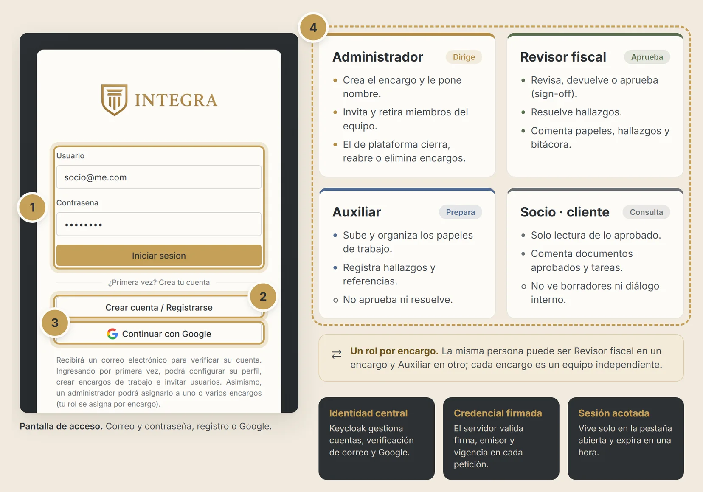
Módulo 03 · Inicio
Panel de control de calidad
El estado del encargo de un vistazo: cuánto está aprobado, qué falta y qué se encontró.
- Encargo activo
Cada auditoría es un expediente propio. Se elige, se renombra o se crea desde la barra superior.
- Avance real
Cuenta solo papeles aprobados con sign-off, no lo subido. En el ejemplo: 65 % (11 de 17).
- Hallazgos + / −
Fortalezas y debilidades del cliente: +4 / −5, con 3 negativos abiertos y 2 resueltos.
- Semáforo por programa
Qué programas están completos, en revisión o pendientes.
- Sello de integridad
Confirma que la bitácora del encargo no ha sido alterada.
Valor para el auditor
Supervisar con un criterio de calidad (lo aprobado) y no de volumen (lo subido), y detectar a tiempo los programas atrasados.
Alineado conNIGC 1NIA 220 (revisada)

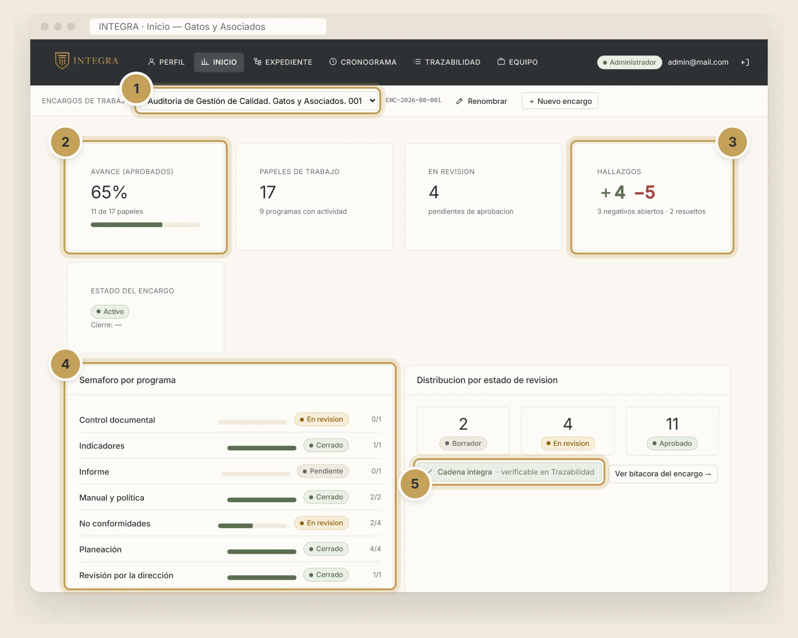
Módulo 04 · Expediente
El expediente, no carpetas
Los papeles se organizan como se audita: encargo, ciclo, programa y papel. Cada interacción con un papel queda documentada.
- Estructura de auditoría
Encargo → ciclo → programa → papel. Cada papel muestra su estado: Borrador, Revisado o Aprobado.
- Agregar documentos
Por botón o arrastrando y soltando. Cualquier formato, con categoría obligatoria.
- Vista previa sin descargar
El documento se ve en pantalla y cada apertura queda en la bitácora (CONSULTA).
- Metadatos del papel
Categoría, ciclo, programa, encargo y estado. Renombrar o eliminar también deja traza.
- Descarga con huella
Toda descarga pasa por el servidor, que registra quién, cuándo y la huella SHA-256 del archivo.
Valor para el auditor
El expediente refleja la lógica de la auditoría. Si el encargo está cerrado, cualquier modificación se rechaza.
Alineado conNIA 230ISO/IEC 27001:2022

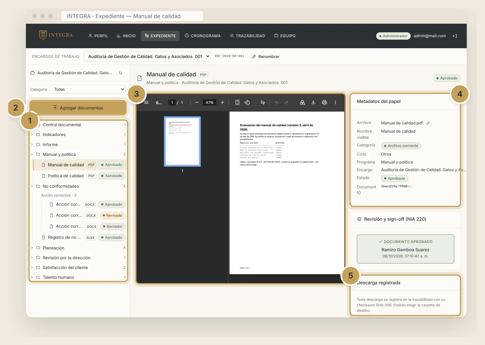
Módulo 05 · Revisión y aprobación
Quien prepara no aprueba
Cada papel pasa por un flujo jerárquico: Borrador → Revisado → Aprobado. La aprobación queda firmada en la bitácora.
- Estado visible en el árbol
Borrador, Revisado o Aprobado junto a cada papel: se ve de un vistazo qué falta.
- Revisión
El Revisor fiscal o el Administrador del encargo marca el papel como «Revisado» o lo devuelve a «Borrador».
- Aprobación (sign-off)
Fija el estado «Aprobado» y sella la bitácora con la huella SHA-256 del archivo. Un papel aprobado no vuelve atrás.
- Sello del firmante
Muestra quién aprobó y cuándo.
Valor para el auditor
Quien prepara (Auxiliar) no aprueba (Revisor fiscal), y quien aprueba no administra el ciclo de vida del encargo. La firma queda atada al contenido exacto del archivo.
Alineado conNIA 220 (revisada)NIA 230

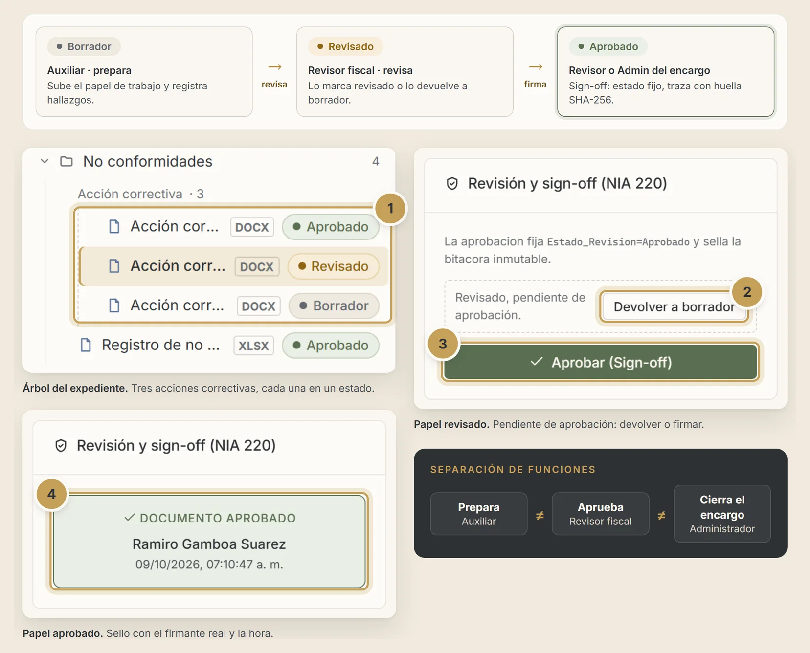
Módulo 06 · Hallazgos y referencias
Lo que se encontró, documentado
Cada papel registra sus hallazgos, se enlaza con los papeles relacionados y guarda el diálogo del equipo.
- Hallazgo negativo con severidad
Baja, Media o Alta. Queda «Abierto» hasta que lo resuelve quien puede aprobar.
- Diálogo sobre el hallazgo
El equipo comenta en hilo; los comentarios quedan en la bitácora.
- Hallazgo positivo
También se documentan las fortalezas del cliente, para una visión equilibrada.
- Referencias cruzadas
Enlazan papeles relacionados, por ejemplo una no conformidad con su acción correctiva.
- Filtro y conteo + / −
Por papel y por encargo, reflejado en Inicio.
En las tres auditorías simuladas: Gatos y Asociados +4 / −5 · Caballos de Troya +4 / −6 · Perros que Muerden +4 / −6.
Valor para el auditor
Los hallazgos dejan de ser notas sueltas: quedan ligados al papel que los soporta, con severidad, responsable, estado y discusión trazable.
Alineado conISO 31000:2018NIA 230

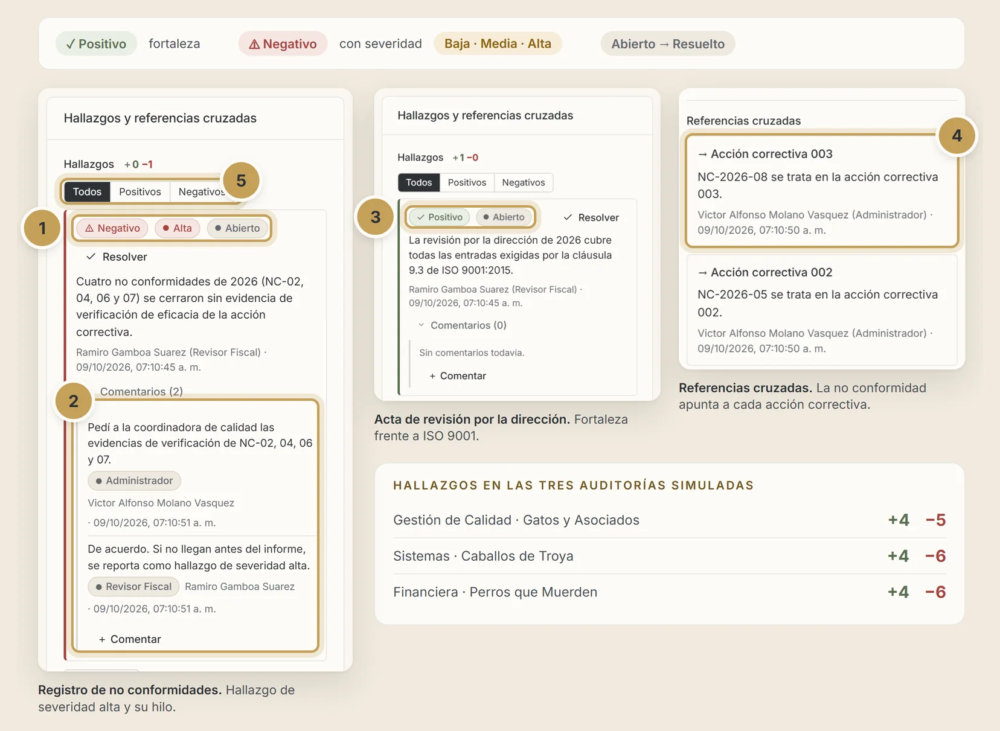
Módulo 07 · Trazabilidad
Bitácora inmutable
Cada acción queda sellada: quién, qué, cuándo y sobre qué documento. Nada se borra y cualquier alteración se detecta.
- Sello «Cadena íntegra»
En cada consulta se recalcula la cadena completa (más de 1 000 registros) o se indica dónde se rompe.
- Filtros y reporte CSV
Por usuario y por evento, con exportación para el socio o un ente de control.
- Quién, qué, cuándo y con qué huella
Fecha, usuario, evento, documento, IP y, en descargas y aprobaciones, la huella SHA-256. Lo eliminado también deja rastro.
- Encadenamiento SHA-256
Cada registro guarda el hash del anterior: alterar uno rompe todos los siguientes. Los registros solo se agregan.
Valor para el auditor
La actividad del equipo se vuelve evidencia verificable: se reconstruye quién hizo qué sobre cada papel y se demuestra que el registro no fue alterado.
Alineado conNIA 230ISO/IEC 27001:2022

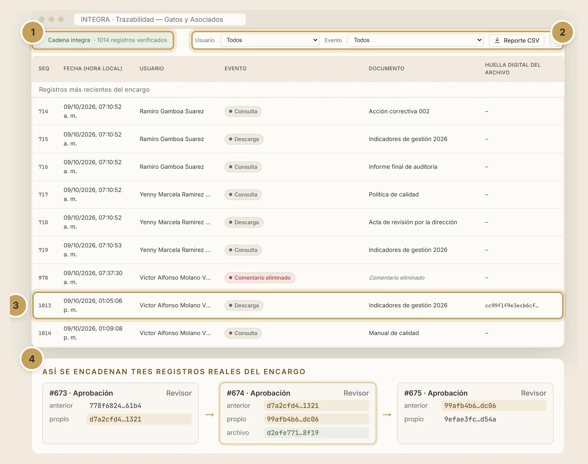
Módulo 08 · Cierre y conservación
Cerrar el expediente, conservar la prueba
Al terminar el encargo, el expediente se congela y la bitácora sobrevive incluso a su eliminación.
- Cierre con fecha del informe
Lo ejecuta el Administrador de plataforma y queda la traza CIERRE.
- Solo lectura inmediata
Se puede consultar y descargar, pero el servidor rechaza cualquier modificación.
- Sellado a los 60 días
Plazo de ensamblaje final contado desde la fecha del informe; un barrido automático sella el archivo (traza LOCKDOWN).
- Eliminación con rastro
Doble confirmación. Se borran documentos y equipo, pero la bitácora se conserva íntegra.
En el prototipo
La protección la aplica el servidor junto con la cadena SHA-256, que hace evidente cualquier alteración.
Diseño para producción
Almacenamiento WORM (S3 Object Lock en modo Compliance) con retención de 5 años: ni la cuenta raíz podría borrar antes del vencimiento.
Valor para el auditor
El expediente se congela al terminar el encargo y su historia sobrevive a la eliminación. La reapertura, si se usa, también queda registrada.
Alineado conNIA 230Ley 43 de 1990

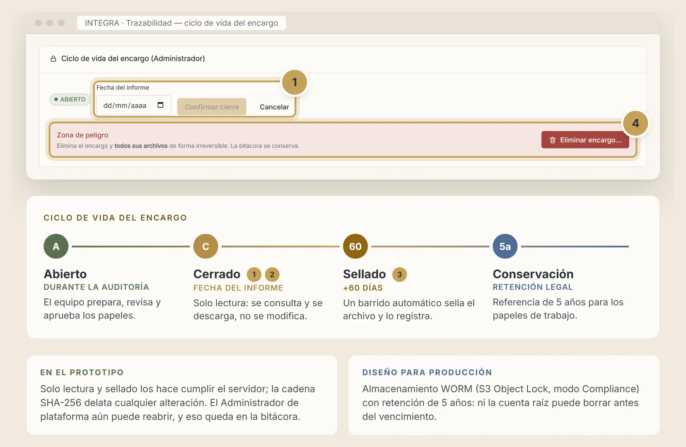
Módulo 09 · Equipo
Un equipo por encargo
Cada auditoría arma su propio equipo, con el rol que cada persona cumple en ese encargo.
- Invitar con rol asignado
El Administrador del encargo elige el rol y el sistema genera un código y un enlace para compartir.
- Aceptar la invitación
El invitado ingresa el código o abre el enlace con su cuenta verificada y queda como miembro.
- Directorio con perfil
Nombre, rol, contacto, hoja de vida y estado; desde aquí se abre el perfil de un compañero.
- Retirar miembros
Solo el Administrador del encargo; el retiro queda en la bitácora.
Valor para el auditor
Cada encargo es un equipo cerrado: solo sus miembros acceden al expediente y nadie puede consultar encargos ajenos.
Alineado conNIA 220 (revisada)ISO/IEC 27001:2022

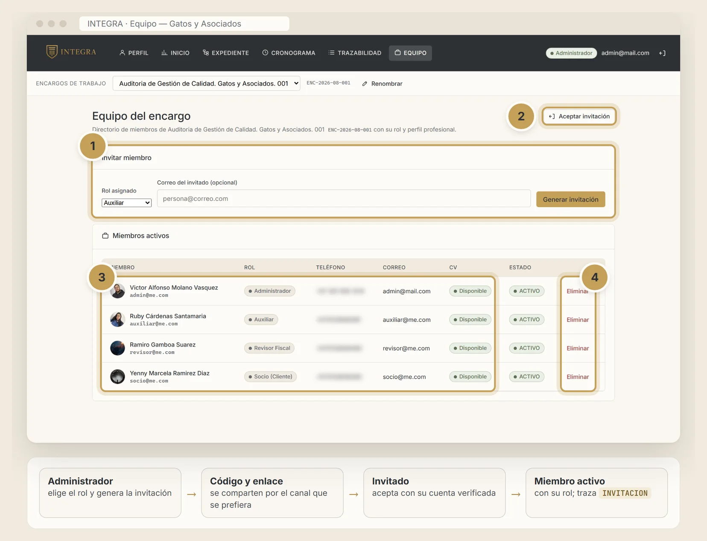
Módulo 10 · Cronograma
El plan de trabajo, a la vista
Las tareas del encargo se organizan por estado y por fase, con fechas, responsables y conversación.
- Tablero por estado
Pendiente, En curso y Completada, con su conteo.
- Fases y nueva tarea
Planeación, ejecución, informe…; se filtra por fase y se agregan tareas.
- Tarea completa
Descripción, rango de fechas, fase y responsable con su nombre.
- Avance y comentarios
El estado se cambia en la tarjeta y cada cambio queda en la bitácora.
En la demostración: Gatos y Asociados, 12 tareas (10 completas) · Caballos de Troya, 13 (10) · Perros que Muerden, 12 (10).
Valor para el auditor
La planificación se integra con el expediente: el avance del cronograma se ve junto a la evidencia.
Alineado conNIA 300 (planificación)NIA 220 (revisada)

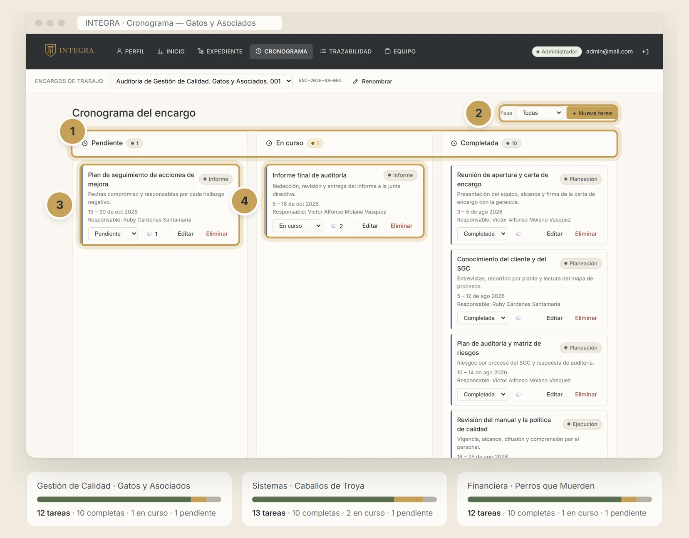
Módulo 11 · Socio y cliente
El cliente ve solo lo aprobado
El socio o cliente consulta el expediente en modo lectura, sin borradores ni diálogo interno del equipo.
- Resumen de lo aprobado
Inicio cuenta únicamente los papeles con sign-off y oculta lo que revelaría trabajo pendiente.
- Hallazgos de lo aprobado
Ve +4 / −1, frente a los +4 / −5 que maneja el equipo.
- Expediente de consulta
Solo papeles aprobados, con el sello del firmante: 11 frente a 17 del equipo.
- Sin acciones de trabajo
No sube, no revisa ni aprueba: el servidor lo impide.
Valor para el auditor
El cliente consulta el resultado sin acceder a borradores ni discusiones internas, y el filtro lo aplica el servidor, no solo la pantalla.
Alineado conISO/IEC 27001:2022Ley 43 de 1990

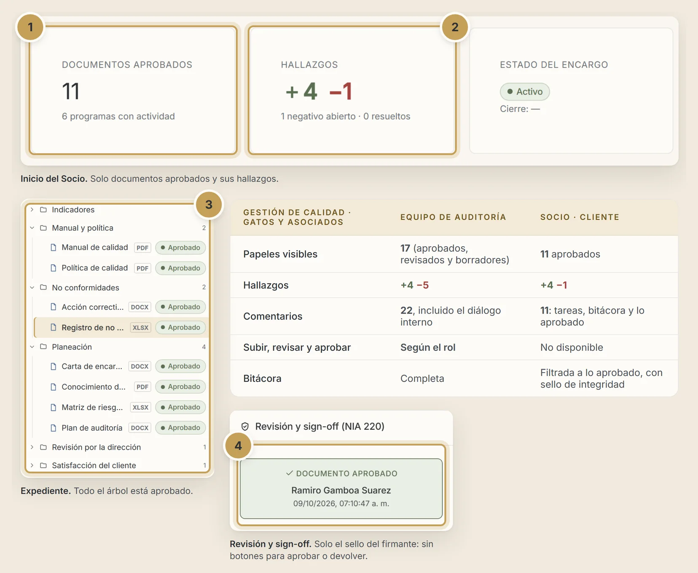
Módulo 12 · Perfil profesional
Quién firma, con nombre propio
Cada usuario mantiene su perfil profesional: el equipo sabe quién preparó, revisó y aprobó cada papel.
- Identidad y presentación
Foto, portada, nombre, contacto y una descripción profesional.
- Redes y aptitudes
Enlaces profesionales y aptitudes de un catálogo o propias.
- Experiencia y educación
Registros estructurados que se editan o eliminan uno a uno.
- Hoja de vida y encargos
Hoja de vida en PDF visible a los compañeros y la lista de encargos con su rol.
Valor para el auditor
Los nombres que aparecen en sellos, hallazgos y bitácora corresponden a profesionales con trayectoria verificable por el equipo.
Alineado conNIA 220 (revisada)NIGC 1

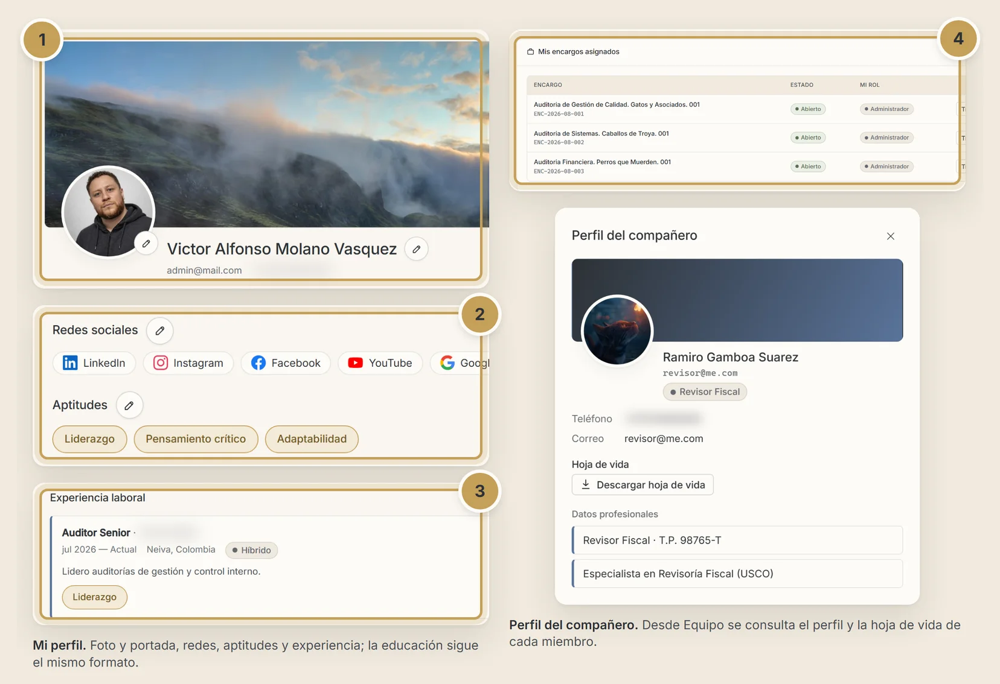
13 · Marco normativo
Diseñado sobre la norma
INTEGRA no certifica cumplimiento: está diseñado para que el trabajo del auditor deje la evidencia que estas normas exigen.
- NIA 230Documentación de auditoría
- Qué exige
- Documentación suficiente y oportuna, ensamblaje final y conservación.
- Cómo lo aborda INTEGRA
- Expediente por encargo, ciclo, programa y papel; cierre y sellado a 60 días.
- NIA 220 (revisada)Gestión de calidad del encargo
- Qué exige
- Dirección, supervisión y revisión del trabajo.
- Cómo lo aborda INTEGRA
- Roles por encargo, flujo Borrador → Revisado → Aprobado y sign-off con firmante.
- NIGC 1Gestión de calidad de la firma
- Qué exige
- Sistema de control de calidad con evidencia y monitoreo.
- Cómo lo aborda INTEGRA
- Panel de calidad, bitácora consolidada por encargo y feed de eventos.
- ISO/IEC 27001:2022Seguridad de la información
- Qué exige
- Control de acceso, integridad, trazabilidad y no repudio.
- Cómo lo aborda INTEGRA
- Credencial verificada en el servidor, permisos por rol, cadena SHA-256 y huella por descarga.
- ISO 31000:2018Gestión del riesgo
- Qué exige
- Enfoque basado en riesgo.
- Cómo lo aborda INTEGRA
- Hallazgos con severidad, positivos y negativos, y referencias cruzadas.
- Ley 43 de 1990y Decreto 2420 de 2015
- Qué exige
- Conservación de los papeles de trabajo y reserva profesional.
- Cómo lo aborda INTEGRA
- Acceso solo para miembros del encargo y retención de 5 años como diseño de producción.
Alcance honesto
INTEGRA es un prototipo académico. Hoy la inmutabilidad es evidente ante manipulación (cadena SHA-256: toda alteración se detecta). El almacenamiento WORM legalmente defendible (S3 Object Lock con retención de 5 años) es el diseño previsto para producción.

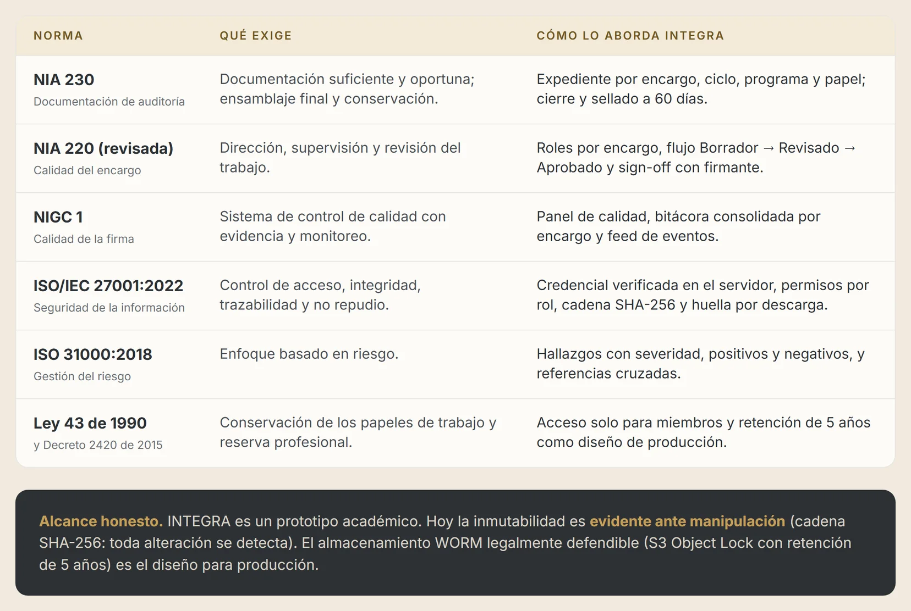